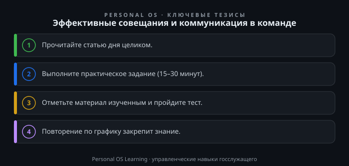

Совещание — это, пожалуй, самый узнаваемый формат работы государственного служащего. Оперативки, планерки, коллегии, межведомственные встречи — на них уходит значительная часть рабочего времени. По разным оценкам, руководители тратят на совещания от 30 до 60 процентов своего дня. Вопрос только в том, превращается ли это время в реальные решения или растворяется в бесконечных докладах, обсуждениях и «вопросах, требующих дополнительной проработки».
Для государственной службы цена неэффективного совещания особенно высока. Здесь каждое решение имеет правовые последствия, каждое поручение должно быть исполнено и проконтролировано, а ответственность за результат распределена между множеством участников. Плохо проведенное совещание — это не просто потерянное время, это сбой в управленческом цикле, который может обернуться срывом сроков, неисполненными поручениями и, в конечном счете, снижением доверия граждан к органам власти. Именно поэтому умение проводить совещания и выстраивать командную коммуникацию — одна из ключевых управленческих компетенций, закрепленных в модели компетенций государственного служащего.
В этой статье мы разберем, как превратить совещания из «черной дыры времени» в рабочий инструмент управления, и рассмотрим практические приемы коммуникации, которые помогают команде действовать слаженно и результативно.
Прежде чем говорить об эффективности, стоит честно признать: большинство проблем совещания закладываются задолго до его начала. Типичная картина: руководитель собирает сотрудников, потому что «так принято по понедельникам», повестка не определена, участники не знают, зачем их позвали, а докладчики готовят презентации «на всякий случай». В результате совещание превращается в информационный марафон, где каждый рассказывает, что он делал на прошлой неделе, а решения либо не принимаются вовсе, либо принимаются, но не фиксируются.
Другая распространенная болезнь — «совещание ради совещания». Когда вопрос можно решить за пять минут в рабочем порядке, его выносят на общее заседание, собирая десять человек и тратя час их совокупного времени. При этом в государственной службе, где действует жесткая иерархия и регламенты, такие встречи часто становятся способом перестраховки: «пусть все услышат, чтобы потом никто не сказал, что не знал».
Наконец, третья проблема — отсутствие контроля исполнения. Решения записаны в протокол, но формулировки размыты: «проработать вопрос», «подготовить предложения», «усилить работу». Без указания конкретного исполнителя, срока и ожидаемого результата такие поручения повисают в воздухе. Через месяц выясняется, что никто ничего не сделал, и совещание приходится проводить заново.
Чтобы избежать этих ошибок, нужно перестроить сам подход: совещание — это не формальность и не способ информирования, а инструмент выработки и фиксации управленческих решений. Всё остальное — доклады, обсуждения, обмен мнениями — должно быть подчинено этой цели. Такой подход закреплен и в общих принципах организации государственной гражданской службы, установленных Федеральный закон «О государственной гражданской службе Российской Федерации», где профессионализм и компетентность служащих напрямую связываются с результативностью их деятельности.
Эффективное совещание начинается за 24 часа до его начала. Именно столько времени нужно участникам, чтобы ознакомиться с материалами и подготовить свои вопросы. Подготовка строится на трех ключевых вопросах, которые руководитель (или ответственный за проведение совещания) должен задать себе заранее.
Первый вопрос: какая цель? Цель должна быть сформулирована через изменение: «принять решение по вопросу о распределении бюджетных средств», «утвердить план мероприятий на квартал», «согласовать позицию по проекту нормативного акта». Если цель не предполагает конкретного результата, который можно зафиксировать и проверить, совещание, скорее всего, не нужно. Информирование можно провести по электронной почте или через систему электронного документооборота.
Второй вопрос: какая повестка? В повестку включаются только те вопросы, которые требуют совместного обсуждения и участия всех приглашенных. Если вопрос находится в компетенции одного сотрудника или отдела, он решается в рабочем порядке. Повестка рассылается заранее, вместе с проектами документов, справками и аналитическими записками. Участники должны приходить на совещание уже погруженными в тему, а не знакомиться с ней впервые.
Третий вопрос: кто участники? Действует принцип минимальной достаточности: приглашаются только те, кто непосредственно участвует в выработке решения или будет отвечать за его исполнение. При этом важно различать участников и приглашенных. Участники — это те, кто имеет право голоса и несет ответственность. Приглашенные — эксперты, которые могут дать справку по узкому вопросу и покинуть заседание после рассмотрения соответствующего пункта. Такой подход экономит время и повышает качество обсуждения.
Практический инструмент: перед каждым совещанием составляйте «карту повестки», где напротив каждого вопроса указаны цель обсуждения, докладчик, необходимое время и ожидаемое решение. Например: «Вопрос 1: утверждение графика закупок. Докладчик: начальник отдела закупок. Время: 15 минут. Ожидаемое решение: утвердить график с учетом замечаний». Эта карта рассылается участникам вместе с приглашением.
Даже хорошо подготовленное совещание может быть сорвано, если председательствующий не управляет ходом обсуждения. Роль модератора — не участвовать в дискуссии как эксперт, а обеспечивать соблюдение регламента, повестки и правил коммуникации. В государственной службе эту роль обычно выполняет руководитель или его заместитель, однако важно помнить: модерация — это отдельная функция, которую можно делегировать.
Основные инструменты модератора — тайминг и «парковка». Тайминг означает жесткое ограничение времени на каждый вопрос повестки. Если обсуждение затягивается, модератор фиксирует: «У нас осталось три минуты, предлагаю перейти к формулировке решения». «Парковка» — это список вопросов, которые не относятся к текущей повестке, но возникают в ходе обсуждения. Их записывают на отдельный лист («парковку»), чтобы вернуться к ним позже или передать в рабочем порядке. Это позволяет не отвлекаться на второстепенные темы.
Отдельная задача — работа с участниками. В любой команде есть «доминанты», которые стремятся говорить больше всех, и «молчуны», которые отмалчиваются. Модератор должен сознательно балансировать дискуссию: доминанту можно мягко остановить формулой «Спасибо, мы услышали вашу позицию. Давайте послушаем других», а молчуна — вовлечь прямым вопросом: «Иван Сергеевич, вы работали с этим документом, какой видите риск?». Важно, чтобы это делалось корректно, без давления, в рамках деловой этики.
Ключевой элемент ведения — фиксация решений в реальном времени. Не «после совещания секретарь оформит протокол», а здесь и сейчас, на глазах у всех. Для этого используется проектор или флипчарт, где записываются формулировки решений. Каждое решение должно быть сформулировано в формате «Кому, что сделать, к какому сроку, с каким результатом». Например: «Начальнику правового отдела подготовить проект приказа о внесении изменений в административный регламент до 15 марта». Если решение не проходит этот тест, оно не фиксируется и отправляется на доработку.
Совещание заканчивается не тогда, когда председатель объявил о закрытии, а когда решения доведены до исполнителей и начат контроль их исполнения. Протокол должен быть подготовлен и разослан участникам в день проведения совещания, а лучше — в течение двух часов. В государственных органах для этого обычно используется система электронного документооборота, которая позволяет ставить поручения на контроль и отслеживать статус их исполнения. Если в вашем органе такой системы нет, подойдут любые доступные средства — от электронной почты до общего сетевого каталога.
Важный принцип: протокол — это не стенограмма, а управленческий документ. Он содержит только решения, поручения и сроки, а не ход дискуссии. Формулировки должны быть однозначными и проверяемыми. Например, вместо «обсудили вопрос о повышении качества обслуживания» следует писать «поручено начальнику отдела контроля разработать чек-лист оценки качества обслуживания до 1 апреля». Такая формулировка позволяет через неделю просто проверить факт исполнения.
После совещания необходимо организовать обратную связь. Неформальный опрос участников — «что было полезного, что можно сократить, что мешало» — помогает улучшать формат. Это можно сделать в виде короткого письма с тремя вопросами или устно, в течение пяти минут после заседания. На государственной службе такая практика пока редкость, но именно она позволяет выявить системные проблемы коммуникации. Важно, чтобы обратная связь была анонимной или конструктивной, иначе участники будут просто отмалчиваться.
И еще один инструмент — «пятиминутка» синхронизации. Если в команде много текущих задач, не требующих полноценного совещания, можно проводить короткие ежедневные встречи по 5–10 минут, где каждый говорит: что сделано, что будет делать сегодня, какие есть препятствия. Это не заменяет полноценные совещания, но снижает потребность в них, потому что информация распространяется быстро и без искажений.
Совещание — лишь часть командной коммуникации. Гораздо большее значение имеет то, как сотрудники взаимодействуют в повседневной работе. Для государственной службы характерны жесткая иерархия и субординация, что накладывает особые требования на стиль общения. Однако субординация не должна превращаться в барьер, мешающий обмену информацией. Подчиненный обязан докладывать о проблемах, а руководитель — создавать для этого безопасную среду, где сотрудник не боится сообщить о рисках и ошибках.
Базовый принцип деловой коммуникации — уважение времени другого человека. Это проявляется в мелочах: приходить на совещания вовремя, готовить материалы заранее, не

Открыть инфографику в полном размере ↗